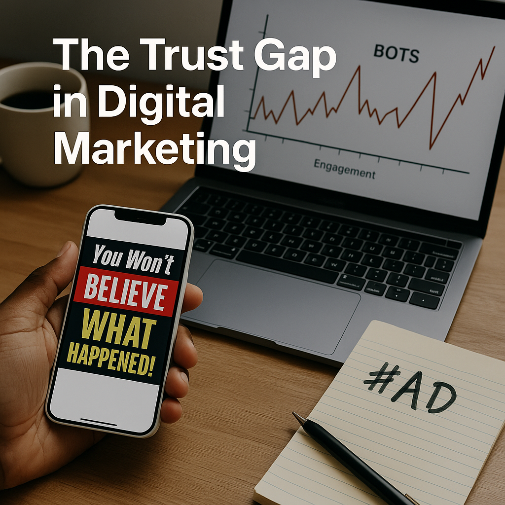
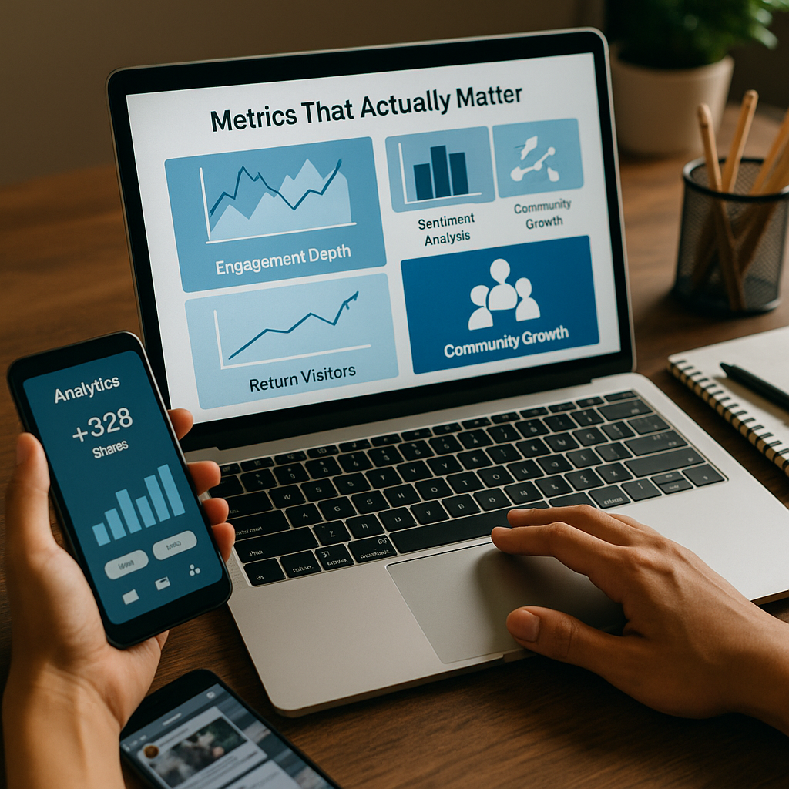

We’ve all seen it—the brand that goes viral, racks up clicks, but fades from memory in weeks.
In today’s content-saturated feeds, attention is cheap.
Trust?
Priceless.
As a writer and strategist, I’ve learned that chasing clicks is a race with no finish line.
Algorithms change, tactics expire, and audiences grow weary of being “engaged” rather than truly served.
Real influence today is about building relationships, not chasing reach.
⚙️ The Algorithm Isn’t Your Enemy
Social media algorithms aren’t magic; they’re math.
They reward signals of value:
- ⏳ Watch time and dwell time
- 💾 Saves, shares, and meaningful comments
- 🧩 Consistency and relevance over hype
Too many brands see algorithms as a game to “hack.”
The truth?
No growth hack can outlast trust.
Instead of fighting the system, use it to serve your audience better.
💔 The Trust Gap in Digital Marketing

In the rush for virality, marketing often sacrifices authenticity:
- 🔥 Clickbait headlines that underdeliver
- 🤖 Bots inflating engagement
- 💸 Influencers hawking products they don’t use
No wonder audiences are skeptical.
As misinformation spreads faster than ever, trust has become a competitive advantage.
When people know you’re credible, you’re algorithm-proof.
🔑 Principles for Building Trust at Scale
Radical Transparency 🔍
- Show your process, cite your sources, admit when you don’t know.
- Audiences respect honesty more than perfection.
Audience-Centered Storytelling 🤝
- Write with your audience in mind, not your KPIs.
- Solve their problems first, sell second.
Consistency Over Virality 📅
- Sustainable growth is built by showing up reliably, not by chasing trends.
Community Engagement 💬
- Reply to comments.
- Start conversations.
- Build relationships that outlive the algorithm.
Diversify Platforms 🌐
- Don’t let one app own your connection to your audience.
- Newsletters, blogs, and podcasts offer algorithm-free lifelines.
🧩 Metrics That Actually Matter

Vanity metrics can’t tell you if people trust you.
Instead, measure:
- 📈 Engagement Depth: Shares, comments, and saves over likes.
- 🧭 Sentiment Analysis: What’s the tone of the conversation around your brand?
- 🔄 Return Visitors: Proof of loyalty, not curiosity.
- 🏆 Community Growth: Subscribers, referrals, and advocacy.
🛠️ Strategies to Win Long-Term
- Invest in Thought Leadership 🧠: Publish original ideas, not recycled hot takes.
- Anchor Content 🎯: Core resources (white papers, guides) you can repurpose endlessly.
- Slow Content Movement 🕊️: Depth and insight beat quantity and speed.
- Humanize the Brand 🤗: Share your story, values, and people.
- Social Listening 🔍: Track what people say, not just what they click.
🌟 Case Studies: Trust in Action
LinkedIn Creators Leading with Expertise: Influencers building trust by being educators first, marketers second.
Small Businesses Scaling with Community Trust: Neighborhood shops thriving without ads by focusing on service.
Nonprofits Driving Impact Over Virality: Building campaigns on empathy, not algorithms.
🔮 The Future of Influence in Algorithmic Feeds
AI-driven platforms are getting smarter at filtering low-quality content.
But trust signals—engagement depth, transparency, meaningful conversations—are future-proof.
In 2025 and beyond, real influence won’t be measured in clicks; it will be measured in credibility.
✨ Conclusion: Trust Is the New SEO
Every marketer has a choice: chase virality or build relationships.
I’ve learned that real influence is earned, not engineered.
Want to outlast algorithms?
Serve before you sell.
Build trust like your career depends on it because it does.